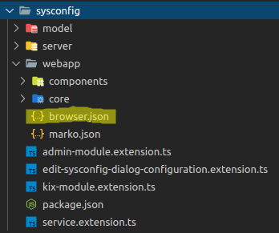
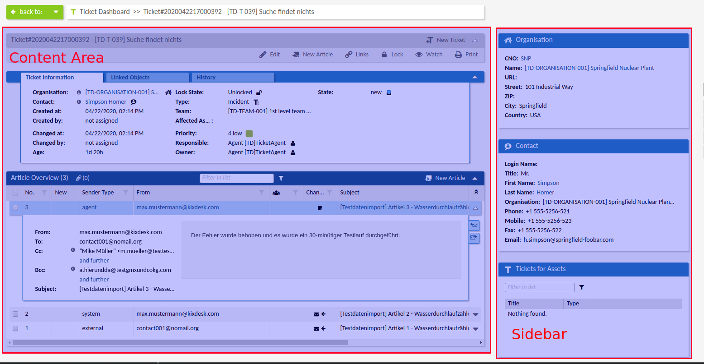
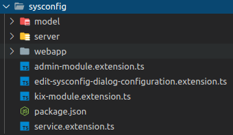
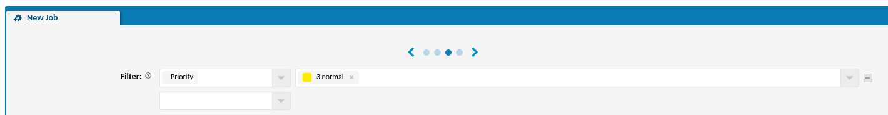
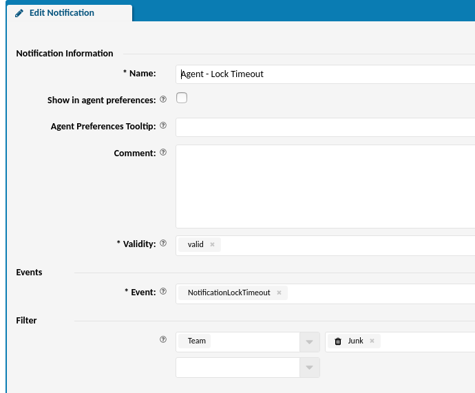

KIX - Frontend Server
Agent Portal
The KIX Agent Portal contains a application framework, web server (REST-API) and web application in once. The server (based on NodeJS) provides a web server instance (express) for http communication. Over the http default route (http://<fqdn>:<port>/) the web server delivers the basic web application. The web application itself is a single page application (SPA) and uses sockets (Socket.io) to communicate with the frontend server.
Source Structure
Source Structure
- cert
- config (common server config)
- doc (dveloper documentation)
- features (cucumber feature tests)
- locale (i18n localization)
- src (source code)
- frontend-applications (applications root folder)
- agent-portal (agent portal source)
- ... ui modules
- plugins (plugins for KIX)
- server (frontend server code)
- tests (unit tests implementation)
- .babelrc
- .bundleignore
- .eslintignore
- .eslintrc
- .gitignore
- .npmignore
- extract-translatables
- gulpfile.js (common build script)
- LICENSE
- LICENSE-Thrid-Party
- license-feature-header.txt
- license-html-header.txt
- license-ts-header.txt
- mocha.json
- package.json
- readme.md
- RELEASE
- tsconfig-cucumber.json
- tsconfig.json
- written-offer.txt
UI Modules
Structure of UI Module
- root directory (name of the ui module)
- package.json
- ... extension implementations
- model
- server
- webapp
- components
- core
- browser.json
- marko.json
package.json
Contains the name and the extension declaration of the ui module.
{
"name": "kix-module-admin",
"extensions": {
...
}
}
model
Contains the data model of the ui module.
server
Contains the server side code of the ui module.
webapp
Contains the web application code of the ui module.
components
Contains the ui components of the ui module.
core
Contains the core implentations of the ui module, e.g. KIXObjectService, TableFactory, LabelProvider.
browser.json
The dependencies of the ui module which should be delivered to browser. (see: Dependencies with browser.json)
marko.json
Import dependencies for marko components.
Build - Webapp
Introduction
After frontend server is started the web application for the agent portal is build. In this process all components and static files are collected and bundled to a web application.
The web application is implemented with the marko framework und and is bundled with the help of the framework Lasso.js.
Extension Implementation
To add components or other static files to the bundling process it is required to register on extension point kix:modules and implement a extension interface IKIXModuleExtension.
The extension requires to implement a property webDependencies. This property is an array of paths to folder where a browser.json-file is contained.
Example
class Extension /*...*/ {
// ...
public webDependencies: string[] = [
'./sysconfig/webapp'
];
// ...
}
Dependencies with browser.json
These paths are inserted into the main browser.json of the application and will be loaded by Lasso.js while bundling the app.

The content of the browser.json contains the following:
{
"dependencies": [
"./components",
"require ./core",
"some.js",
"some.css"
]
}
There are different types of dependencies.
- folder (this is a dependency for folder. The folder has to contains also a
browser.json) - require (this can require also a folder. The folder then has to contain a
index.tswhich exports the implementation) - some.js (requires a specific javascript file)
- some.css (requires a specific style sheet)
For more information about dependencies see: https://github.com/lasso-js/lasso#dependencies
After collecting all extensions the main browser.json contains a list with all needed depending browser.json files for the web application.
Example:
{
"dependencies": [
"./style.less",
"../../../../static/thirdparty/socket.io.js",
"../../../../modules/admin/webapp",
"../../../../modules/base-components/webapp",
"../../../../modules/bulk/webapp",
"../../../../modules/calendar/webapp",
"../../../../modules/cmdb/webapp",
"../../../../modules/customer/webapp",
"../../../../modules/dynamic-fields/webapp",
"../../../../modules/faq/webapp",
"../../../../modules/general-catalog/webapp",
"../../../../modules/home/webapp",
"../../../../modules/icon/webapp",
"../../../../modules/import/webapp",
"../../../../modules/import-export/webapp",
"../../../../modules/job/webapp",
"../../../../modules/kanban/webapp",
"../../../../modules/links/webapp",
...
"../../../../modules/sysconfig/webapp",
...
]
}
UI Components
A UI component is the implementation of a web component which is rendered and displayed in the browser. The components are based on the marko-jshttps://markojs.com) framework.
Basic Component Structure
Its recommended to use a multi file component implementation which means that you have to separate your code into 4 files:
- index.marko (view html (marko) template)
- component.ts (view model)
- ComponentState.ts (the state class for the component)
- style.less (component specific styling)

For detailed information see: https://markojs.com/docs/class-components/#multi-file-components
Behavior and Lifecycle
If the state of the component is manipulated or the component receives new input the template will automatically update in the browser.
- First the component is created the method
onCreate()is called by marko. In this method you have to instantiate theComponentState. - After the component is created the next step is to mount the component in the DOM. In this case the method
onMount()is called. In this method you can implement the initial status of the component. - If the component recieves new input from parent then the method
onInput(input: any)is called. - At the end of the lifecycle the method
onDestroy()is called. In this implementation you can cleanup all the things depending to your component.
For more information see: https://markojs.com/docs/class-components/#lifecycle-events
Example timer:
index.marko
<span>
<translation-string pattern="Translatable#expected time required:"/>
${state.timeText}
</span>
component.ts
class Component extends AbstractMarkoComponent<ComponentState> {
private interval: any;
public onCreate(): void {
this.state = new ComponentState();
}
public onInput(input: any): void {
this.state.time = input.time;
}
public async onMount(): Promise<void> {
if (this.state.time) {
this.interval = setInterval(() => {
this.state.time = this.state.time - 1000;
if (this.state.time <= 0) {
this.state.time = 0;
}
this.state.timeText = DateTimeUtil.getTimeByMillisec(this.state.time);
}, 1000);
}
}
public async onDestroy(): Promise<void> {
clearInterval(this.interval);
}
}
module.exports = Component;
ComponentState.ts
export class ComponentState {
public constructor(
public time: number = null,
public timeText: string = null
) { }
}
Context
A context is container which load and hold objects which can be used by components. There are two different types of contexts.
- MainContext (general pages in agent portal, e.g. Ticket Dashboard, Ticket Details, CMDB Dashboard)
- DialogContext (dialogs in agent portal, e.g. New Ticket Dialog, Edit Ticket Dialog)
On the otherside the context needs a configuration which pretend which components are available at this context. This configuration contains different lists:
- explorer
- sidebars
- content
- lanes
- overlays
- others
- dialogs
A context has to be registered with a ContextDescriptor in the application via a UIModule (see Init Components).
ContextService.getInstance().registerContext(new ContextDescriptor(/* ... */);
ContextDescriptor
| parameter | description | exmaple |
|---|---|---|
| contextId | The id of the context (same as the configurationId of the context configuration) | ticket-details |
| kixObjectTypes | An array of supported object types for the context | ['Ticket'] |
| contextType | The ContextType of the context | MAIN |
| contextMode | The ContextMode of the context | DETAILS |
| componentId | The id (tag name) of the main context component | object-details |
| urlPaths | An array with relativ paths for the context. Required to join a context via browser url | ['tickets'] |
| contextClass | The constructor of the context class implementation | TicketDetailsContext |
export class ContextDescriptor {
public constructor(
public contextId: string,
public kixObjectTypes: Array<KIXObjectType | string>,
public contextType: ContextType,
public contextMode: ContextMode,
public componentId: string,
public urlPaths: string[],
public contextClass: new (
descriptor: ContextDescriptor, objectId: string | number, configuration: ContextConfiguration
) => Context
) { }
public isContextFor(kixObjectType: KIXObjectType | string): boolean {
return this.kixObjectTypes.some((t) => t === kixObjectType);
}
}
Exmaple
const ticketDetailsContextDescriptor = new ContextDescriptor(
TicketDetailsContext.CONTEXT_ID, [KIXObjectType.TICKET, KIXObjectType.ARTICLE],
ContextType.MAIN, ContextMode.DETAILS,
true, 'object-details-page', ['tickets'], TicketDetailsContext
);
ContextService.getInstance().registerContext(ticketDetailsContextDescriptor);
Functionality
If a page should be shown in the agent portal the context is always the required base for it. The application loads the context and its configuration from the configuration cache The component which is defined in the ContextDescriptor is loaded and included in the web application content area. After the configuration is loaded the context get initialized and the context is now responsible to load objects or execute other needed functionality.
Components can register a listener on the context to get notified about changes to update theirself.
The main application reacts on the context changing and updates the main template. The explorer and the sidebar also reacts on this change and load the components from the context configuration.

Configuration
The configuration is the base for main composition of components in the agent portal. Configurations are stored in the Sysconfig. There are different types of configurations possible:
export enum ConfigurationType {
Context = 'Context',
Widget = 'Widget',
TabWidget = 'TabWidget',
TableWidget = 'TableWidget',
HelpWidget = 'HelpWidget',
Table = 'Table',
TableColumn = 'TableColumn',
Form = 'Form',
FormPage = 'FormPage',
FormGroup = 'FormGroup',
FormField = 'FormField',
Chart = 'Chart',
ChartWidget = 'ChartWidget',
ObjectInformation = 'ObjectInformation',
ObjectReferenceWidget = 'ObjectReferenceWidget',
Slider = 'Slider',
LinkedObjects = 'LinkedObjects',
MainMenu = 'MainMenu',
Kanban = 'Kanban'
}
Each configuration type has specific options to configure. To add new configurations you have to register and implement a extension for the extension point kix:configuration (see: Extensions Configuration).
Implementation - IConfiguration
A configuration class has to implement the interface IConfiguration.
| parameter | description | exmaple |
|---|---|---|
| id | The id of the configuration (name of the Sysconfig option) | home-dashboard-notes-widget |
| name | A name for the configuraton | Notes Widget |
| type | The type of the configuration (ConfigurationType or string) | Chart |
| subConfigurationDefinition? | If the configuration has a subdefinition, this defines the reference (ConfigurationDefinition). | |
| configuration? | The configuration itself. | object { ... } |
export interface IConfiguration {
id: string;
name: string;
type: ConfigurationType | string;
subConfigurationDefinition?: ConfigurationDefinition;
configuration?: IConfiguration;
}
export class ConfigurationDefinition {
public constructor(
public configurationId: string,
public configurationType: ConfigurationType
) { }
}
Functionality
At the startup of the frontend server all extensions for the extension point kix:configuration are loaded and all provided configurations are collected. This list of configurations is sent to the backend via the ClientRegistration. The backend uses this list to create new or update existing sysconfig options.
After ClientRegistration process the frontend server loads all the configurations that belong to itself and buld up the configuration cache. This cache is required for context and form configurations. That means the server used all configurations of type Context and Form and resolves all configuration references and merged it to one Context or Form configuration.
Context Configuration
The ContextConfiguration is specific implementation of IConfiguration (see: Implementation - IConfiguration).
| parameter | description | exmaple |
|---|---|---|
| id | ||
| name | ||
| type | ||
| contextId | ||
| sidebars | ||
| explorer | ||
| lanes | ||
| content | ||
| generalActions | ||
| actions | ||
| overlays | ||
| others | ||
| dialogs |
export class ContextConfiguration implements IConfiguration {
public constructor(
public id: string,
public name: string,
public type: string | ConfigurationType,
public contextId: string,
public sidebars: ConfiguredWidget[] = [],
public explorer: ConfiguredWidget[] = [],
public lanes: ConfiguredWidget[] = [],
public content: ConfiguredWidget[] = [],
public generalActions: string[] = [],
public actions: string[] = [],
public overlays: ConfiguredWidget[] = [],
public others: ConfiguredWidget[] = [],
public dialogs: ConfiguredDialogWidget[] = []
) { }
}
Implementation - ConfiguredWidget
This list are arrays of type ConfiguredWidget or for dialogs type of ConfiguredDialogWidget.
| parameter | description | exmaple |
|---|---|---|
| instanceId | The id of the concrete instance for usage of this widget | home-dashboard-notes-widget |
| configurationId | The id of the referenced configuration | home-dashboard-notes-widget |
| configuration? | The configuration if not referenced by id | Object: { ... } |
| permissions | Permissions for the widget. If the user has insufficient rights the widget ist filtered out on context loading. |
export class ConfiguredWidget {
public constructor(
public instanceId: string,
public configurationId: string,
public configuration?: WidgetConfiguration,
public permissions: UIComponentPermission[] = []
) { }
}
ExtendedKIXObjectService
Layer: Webapplication (Browser)
Implementation
The ExtendedKIXObjectService implements the interface IKIXObjectService and has an default implementation for each method of the interface. The methods itself do not execute anything and always return null. You can overwrite a needed method and return a value which is required for you extension.
export class MyObjectService extends ExtendedKIXObjectService {
// ...
}
Registration
Register the service in the UIModule
TicketService.getInstance().addExtendedService(new MyObjectService());
Example
In this example the getTreeNodes() method is overwritten and has a specific implementation for a specific property. If its another property the method returns null and the default is used.
export class MyObjectService extends ExtendedKIXObjectService {
public async getTreeNodes(
property: string, showInvalid?: boolean, invalidClickable?: boolean,
filterIds?: Array<string | number>, loadingOptions?: KIXObjectLoadingOptions,
objectLoadingOptions?: KIXObjectSpecificLoadingOptions
): Promise<TreeNode[]> {
let nodes: TreeNode[];
if (property === 'MyObjectProperty') {
nodes = [
new TreeNode('my-object-property', 'My Object Property')
];
}
return nodes;
}
}
KIXObjectFactory
Layer: Webapplication (Browser)
This extension can be used to extend the model. You can provide an additional object constructor which is executed if an new instance of the model is created.
Implementation
It is required to implement class which has an public constructor and extends the base object.
export class ExtendedTicket extends Ticket {
public extendedProperty: string;
public constructor(ticket: Ticket) {
super(ticket);
if (ticket) {
// optional: additional property handling for this object
}
}
}
Registration
Register the constructor in the UIModule
TicketBrowserFactory.getInstance().registerObjectConstructor(ExtendedTicket);
Modularization - Plugins
Indruction
The framework provides the possibility to provide functionality via plugins with the help of extension points. One Plugin can contain several extension point implementations.
A extension point describes a specific interface which one is needed to be implemented by the extension.
Structure of a Plugin
- src
- package.json
- RELEASE
- locale
- [module]
- README.md
- (other files to organise the plugin, e.g. ci/cd definitions, ide configurations)
The src folder contains the main implementation of the plugin.
RELEASE File
The RELEASE file defines the current state and the requirements of the plugin. This file is evaluated at frontend server startup and checks the dependencies from the REQUIRES field. If dependencies could not be resolved the plugin will not be available in the software.
| Property | Value | Example |
|---|---|---|
| PRODUCT | Name of th plugin | MyPlugin |
| VERSION | String which describes the version | 1 or V1 |
| BUILDDATE | String with the date of build | Fri, 17 Apr 2020 07:30:54 +0200 |
| BUILDNUMBER | The build number of the version | 1, 3354 |
| REQUIRES | Dependencies for the plugin | framework(>3), backend::Maintenance |
REQUIRES Following syntax is supported for the REQUIRES dependencies:
- framework (the frontend it self)
- framework(>1) (the frontend must be available in the specified version)
- pluginname (only the name of the depending plugin; plugin must be available)
- pluginname(>1) (the name of the depending plugin with a version requirement; plugin must be available in the specified version; supported operators: >, <, =, !)
- backend (the KIX backend)
- backend::pluginname (this plugin must be available in KIX backend)
- backend::pluginname(>1) (this plugin must be available in the specified version in KIX backend)
Example:
PRODUCT = MyPlugin
VERSION = 1
BUILDDATE = Fri, 17 Apr 2020 07:30:54 +0200
BUILDNUMBER = 12
REQUIRES = framework(>3340), backend::KIXPro
Package.json File
This file contains the name of the plugin. This is important for bundling the wep application.
Example:
{
"name": "MyPlugin"
}
locale
This folder should contain the po files for the translations if the plugin provide new translations.
To provide this translation files to KIX you have to register on extension point kix:locale and implement the extension interface ILocaleExtension.
[module]
A module contains implementations for a specific context or topic (e.g. ticket, cmdb, faq, maintenance, calendar).
The following structure of a module is recommended:
- model (datamodel for the module)
- server (implementations for the server side, e.g. services for KIX backend communication, socket namespaces)
- tests (test implementation for the module)
- webapp (implementation for the agent portal wep application)
- package.json (defines the name of the module and the list of extensions)
- [...extension.ts] (a specific extension implementation)

ExtendedLabelProvider
Layer: Webapplication (Browser)
Implementation
The ExtendedLabelProvider implements the interface ILabelProvider and has an default implementation for each method of the interface. The methods itself do not execute anything and always return null. You can overwrite a needed method and return a value which is required for you extension.
export class ExtendedTicketLabelProvider extends ExtendedLabelProvider {
// ...
}
Registration
Register the service in the UIModule
const ticketLabelProvider = LabelService.getInstance().getLabelProviderForType(KIXObjectType.TICKET);
if (ticketLabelProvider) {
ticketLabelProvider.addExtendedLabelProvider(new ExtendedTicketLabelProvider());
}
Example
In this example the getPropertyText() method is overwritten and has a specific implementation for specific properties to provide a different display value. If its another property the method returns null and the default is used.
export class MyObjectService extends ExtendedKIXObjectService {
public async getPropertyText(property: string, short?: boolean, translatable?: boolean): Promise<string> {
let displayValue;
switch (property) {
case TicketProperty.TICKET_NUMBER:
displayValue = 'T#-Number'
break;
case TicketProperty.QUEUE_ID:
displayValue = 'Department'
break;
default:
}
return displayValue;
}
}
ExtendedTableFactory
Layer: Webapplication (Browser)
With this extension its possible to modify given table configurations from the TableFactory.
Implementation
The ExtendedTableFactory provides the method modifiyTableConfiguation.
export class ExtendedTicketTableFactory extends ExtendedTableFactory {
// ...
}
Registration
Register the service in the UIModule
const tableFactory = TableFactoryService.getInstance().getTableFactory<TicketTableFactory>(
KIXObjectType.TICKET
);
if (tableFactory) {
tableFactory.addExtendedTableFactory(new ExtendedTicketTableFactory());
}
Example
In this example the modifiyTableConfiguation() method is overwritten and adds a new column before the given columns.
export class ExtendedTicketTableFactory extends ExtendedTableFactory {
public async modifiyTableConfiguation(
tableConfiguration: TableConfiguration, useDefaultColumns: boolean
): Promise<void> {
if (useDefaultColumns) {
tableConfiguration.tableColumns = [
new DefaultColumnConfiguration(
null, null, null, 'MyProperty', true, false, true, false, 135, true, true
),
...tableConfiguration.tableColumns
];
}
}
}
ExtendedDynamicFormManager
Layer: Webapplication (Browser)
With this extension its possible to add specif handling for dynamic form. A dynamic form is used in different ui components, e.g. search dialog, filter for notifications, bulk dialog.
Filter in Job dialog

Filter in Notification dialog

Search Criteria in Search dialog

Implementation
The ExtendedDynamicFormManager implements the interface IDynamicFormManager and has an default implementation for each method of the interface. The methods itself do not execute anything and always return null. You can overwrite a needed method and return a value which is required for you extension.
export class ExtendedTicketDynamicFormManager extends ExtendedDynamicFormManager {
// ...
}
Registration
Register the service in the UIModule
// search
const ticketSearchDefinition = SearchService.getInstance().getSearchDefinition(KIXObjectType.TICKET);
if (ticketSearchDefinition && ticketSearchDefinition.formManager) {
ticketSearchDefinition.formManager.addExtendedFormManager(new KIXProTicketDynamicFormManager());
}
// notification
NotificationFilterManager.getInstance().addExtendedFormManager(new KIXProTicketDynamicFormManager());
// job
TicketJobFilterManager.getInstance().addExtendedFormManager(new KIXProTicketDynamicFormManager());
// bulk
const bulkManager = BulkService.getInstance().getBulkManager(KIXObjectType.TICKET);
if (bulkManager) {
bulkManager.addExtendedFormManager(new KIXProTicketDynamicFormManager());
}
Example
In this example the getOperations() method is overwritten and adds a specific search operator for the property ticket number otherwise it returns null and the default is used.
export class ExtendedTicketDynamicFormManager extends ExtendedDynamicFormManager {
public async getOperations(property: string): Promise<string[]> {
const operations: string[];
if(property === TicketProperty.TICKET_NUMBER) {
operations= [SearchOperator.LIKE];
}
return operations;
}
}
ExtendedConfigItemFormFactory
Layer: Webapplication (Browser)
Implementation
The ExtendedConfigItemFormFactory provides the method getFormField() to handle specific config item class attributes for the form.
export class MyExtendedConfigItemFormFactory extends ExtendedConfigItemFormFactory {
// ...
}
Registration
Register the service in the UIModule
ConfigItemFormFactory.getInstance().addExtendedConfigItemFormFactory(new MyExtendedConfigItemFormFactory());
Example
In this example a Config Item Class contains a attribute with a new type MyConfigItemAttribute. For this type a specific input is needed.
export class MyExtendedConfigItemFormFactory extends ExtendedConfigItemFormFactory {
public getFormField(
ad: AttributeDefinition, parentInstanceId?: string, parent?: FormFieldConfiguration
): FormFieldConfiguration {
let formField: FormFieldConfiguration;
if (ad.Input.Type === 'MyConfigItemAttribute') {
formField = new FormFieldConfiguration(ad.Key, ad.Name, ad.Key, 'object-reference-input', ad.Input.Required, null,
[
new FormFieldOption(ObjectReferenceOptions.OBJECT, 'MyObject'),
new FormFieldOption(ObjectReferenceOptions.MULTISELECT, false),
new FormFieldOption(FormFieldOptions.INPUT_FIELD_TYPE, InputFieldTypes.OBJECT_REFERENCE)
],
null, null, null, parentInstanceId, ad.CountDefault, ad.CountMax, ad.CountMin,
ad.Input.MaxLength, ad.Input.RegEx, ad.Input.RegExErrorMessage
);
}
return formField;
}
}
ExtendedDynamicFieldFormUtil
Layer: Webapplication (Browser)
Implementation
The ExtendedDynamicFieldFormUtil implements the interface IDynamicFieldFormUtil and has an default implementation for each method of the interface. The methods itself do not execute anything and always return null. You can overwrite a needed method and return a value which is required for you extension.
export class MyDynamicFieldFormUtil extends ExtendedDynamicFieldFormUtil {
// ...
}
Registration
Register the service in the UIModule
DynamicFieldFormUtil.getInstance().addExtendedDynamicFormUtil(new MyDynamicFieldFormUtil());
ExtendedTicketPlaceholderHandler
Layer: Webapplication (Browser)
With this extension its possible to handle specific KIX placeholders for additional ticket attributes. The extended handlers are sorted by their handlerId if two or more would return true in isHandlerFor. Please note the the default ticket replacement functionality (or another extended placeholder handler) is no fallback if the used extended placeholder handler returns nothing.
Implementation
The new ExtendedTicketPlaceholderHandler should extend AbstractPlaceholderHandler which has an default implementation for each method of the IPlaceholderHandler interface. You can overwrite a needed method and return a value which is required for you extension (e.g. isHandlerFor and replace).
export class ExtendedTicketPlaceholderHandlerForNewTicketAttributes extends AbstracPlaceholderHandler {
// ...
}
Registration
Register the service in the UIModule
const placeholderHandler = PlaceholderService.getInstance().getHandlerByObjectType<DynamicFieldValuePlaceholderHandler>(
KIXObjectType.TICKET
);
if (placeholderHandler) {
placeholderHandler.addExtendedPlaceholderHandler(new ExtendedTicketPlaceholderHandlerForNewTicketAttributes());
}
Example
export class ExtendedTicketPlaceholderHandlerForNewTicketAttributes extends AbstracPlaceholderHandler {
public handlerId: string = '500-ExtendedTicketPlaceholderHandlerForNewTicketAttributes';
private newAttributes: string[] = ['NewAttribute1', 'NewAttribute2'];
public isHandlerFor(placeholder: string): boolean {
const objectString = PlaceholderService.getInstance().getObjectString(placeholder);
const attribute: string = PlaceholderService.getInstance().getAttributeString(placeholder);
return objectString && objectString === 'TICKET' && attribute && this.newAttributes.some((a) => a === attribute);
}
public async replace(placeholder: string, ticket?: Ticket, language?: string): Promise<string> {
let result = '';
if (ticket && this.isHandlerFor(placeholder)) {
const attribute: string = PlaceholderService.getInstance().getAttributeString(placeholder);
if (attribute && ticket[attribute]) {
result = this.prepareNewTicketAttirbute(ticket, attribute);
}
}
return result;
}
private prepareNewTicketAttirbute(ticket: Ticket, attribute: string): string {
// ...
}
}
ExtendedDynamicFieldPlaceholderHandler
Layer: Webapplication (Browser)
With this extension its possible to handle specific KIX placeholder for dynamic fields.
Implementation
The ExtendedDynamicFieldPlaceholderHandler implements the interface IPlaceholderHandler and has an default implementation for each method of the interface. The methods itself do not execute anything and always return null. You can overwrite a needed method and return a value which is required for you extension.
export class MyExtendedDynamicFieldPlaceholderHandler extends ExtendedDynamicFieldPlaceholderHandler {
// ...
}
Registration
Register the service in the UIModule
const placeholderHandler = PlaceholderService.getInstance().getHandlerByObjectType<DynamicFieldValuePlaceholderHandler>(
KIXObjectType.DYNAMIC_FIELD
);
if (placeholderHandler) {
placeholderHandler.addExtendedPlaceholderHandler(new MyExtendedPlaceholderHandler());
}
Example
export class MyDynamicFieldPlaceholderHandler extends ExtendedDynamicFieldPlaceholderHandler {
public async handleKey(object: KIXObject, dfValue: DynamicFieldValue): Promise<string> {
const dynamicField = await KIXObjectService.loadDynamicField(dfValue.Name);
let result: string;
if (dynamicField && dynamicField.FieldType === 'MyDynamicFieldType') {
const separator = dynamicField.Config && dynamicField.Config.ItemSeparator ?
dynamicField.Config.ItemSeparator : ', ';
result = Array.isArray(dfValue.Value) ? dfValue.Value.join(separator) : [dfValue.Value].join(separator);
}
return result;
}
}
ExtendedJobFormManager
Layer: Webapplication (Browser)
With this extension its possible to handle specific KIX placeholder for dynamic fields.
Implementation
The ExtendedJobFormManager implements the interface IJobFormManager and has an default implementation for each method of the interface. The methods itself do not execute anything and always return null. You can overwrite a needed method and return a value which is required for you extension.
export class MyExtendedJobFormManager extends ExtendedJobFormManager {
// ...
}
Registration
Register the service in the UIModule
const manager = JobFormService.getInstance().getJobFormManager(JobTypes.SYNCHRONISATION);
if (manager) {
(manager as AbstractJobFormManager).addExtendedJobFormManager(new MyExtendedJobFormManager());
}
Example
This example provides a specific FormFieldConfiguration for an action parameter.
export class MyExtendedJobFormManager extends ExtendedJobFormManager {
public getActionOptionField(
action: MacroAction, option: MacroActionTypeOption, actionType: string, actionFieldInstanceId: string,
jobType: string
) {
if (jobType === 'MyJobType') {
if (option.Name === 'Description') {
let defaultValue: FormFieldValue;
if (action && action.Parameters) {
defaultValue = new FormFieldValue(action.Parameters[option.Name]);
}
return new FormFieldConfiguration(
`job-action-${actionType}-${option.Name}`, option.Label,
`${actionFieldInstanceId}###${option.Name}`,
'text-area-input', Boolean(option.Required), option.Description, undefined,
defaultValue
);
}
}
return null;
}
}
Extensions & Components
kix:modules
A KIX module represents a UI module which contains all the references for the UI components and businesslogic for a specific context. To register a new module you have to register and implement the extension point. A plugin can contain multiple kix:modules extensions.
Exmaple:
- Object Read Module (defines components & logic to display objects in the UI, e.g. tables, detail pages, label provider, services, search)
- Object Edit Module (defines components & logic to create or edit the object via UI, e.g. edit dialog, new dialog, bulk action)
Registration
{
"name": "My-Plugin",
"extensions": {
"kix:modules": {
"my-plugin-module": {
"module": "my-plugin-module.extension"
}
}
}
}
Implementation - IKIXModuleExtension
| property | description | exmaple |
|---|---|---|
| pluginId | The id of the plugin where the extension is implemented. | MyPlugin |
| applications | An array of application ids where extension is used. | agent-portal |
| id | The id of the extension implementation itself | my-plugin-module |
| initComponents | An array of UIComponent. For more details see Init-Components | |
| uiComponents | An array of UIComponent. | |
| webDependencies | An array with paths to folder with browser.json files |
Example:
class Extension extends KIXExtension implements IKIXModuleExtension {
public pluginId: string = 'MyPlugin';
public applications: string[] = ['agent-portal'];
public id = 'my-plugin-module';
public initComponents: UIComponent[] = [
new UIComponent('MyPluginUIModule', '/my-plugin$0/webapp/core/MyPluginUIModule', [])
];
public uiComponents: UIComponent[] = [
new UIComponent('my-component', '/my-plugin$0/webapp/components/my-component', [])
];
public webDependencies: string[] = [
'./MyPlugin/webapp'
];
}
module.exports = (data, host, options): Extension => {
return new Extension();
};
UIComponent
The UIComponent describes the tag name, the path and the needed permissions for the component.
- The tag name is required to load the component via name for dynamic includes.
- The path is needed to resolve and load the component in the browser context.
- The permissions are optional. If there are permissions defined and the user has insufficient rights then this component is not available for the user.
Examples:
new UIComponent('faq-read-module-component', '/kix-module-faq$0/webapp/core/ui-modules/FAQReadUIModule', [
new UIComponentPermission('faq/articles', [CRUD.READ])
]);
new UIComponent('faq-edit-module-component', '/kix-module-faq$0/webapp/core/ui-modules/FAQEditUIModule', [
new UIComponentPermission('faq/articles', [CRUD.CREATE]),
new UIComponentPermission('faq/articles/*', [CRUD.UPDATE])
]);
new UIComponent('faq-admin-module-component', '/kix-module-faq$0/webapp/core/ui-modules/FAQAdminUIModule', [
new UIComponentPermission('system/faq/categories', [CRUD.CREATE], true),
new UIComponentPermission('system/faq/categories/*', [CRUD.UPDATE], true)
]);
Init-Components
Init-Components are loaded at the initialization process of the wep application. The Init-Component is responsible to register bussinesslogic for the module, e.g. LabelProvider, Services, TableFactories and more.
Implementation - IUIModule
It is required that the name of the class is UIModule and this class has to implement the IUIModule.
| property/function | description | exmaple |
|---|---|---|
| name | Name of the module. | MyPluginUIModule |
| priority | The priority of this module. All modules are sorted and loaded by priority ascend. | 1000 |
| register() | This method is called by the initialization process to register all the needed businesslog for the module. | |
| unRegister() | not needed. (There is no unregister process at the moment) |
Example:
export class UIModule implements IUIModule {
public name: string = 'MyPluginUIModule';
public async unRegister(): Promise<void> {
throw new Error("Method not implemented.");
}
public priority: number = 1050;
public async register(): Promise<void> {
// ...
TableFactoryService.getInstance().registerFactory(new MyObjectTableFactory());
LabelService.getInstance().registerLabelProvider(new MyObjectLabelProvider());
ServiceRegistry.registerServiceInstance(MyObjectService.getInstance());
FactoryService.getInstance().registerFactory('MyObject', MyObjectBrowserFactory.getInstance());
ServiceRegistry.registerServiceInstance(MyObjectFormService.getInstance());
ContextService.getInstance().registerContext(new ContextDescriptor(/* ... */);
ContextService.getInstance().registerContext(new ContextDescriptor(/* ... */);
ActionFactory.getInstance().registerAction('my-object-create-action', MyObjectCreateAction);
// ...
}
}
kix:configuration
This extension point can be used to provide new configurations for the agent portal.
Registration
{
"name": "My-Plugin",
"extensions": {
"kix:configuration": {
"my-plugin-configuration": {
"module": "my-plugin-configuration.extension"
}
}
}
}
Implementation - IConfigurationExtension
| function | description |
|---|---|
| getDefaultConfiguration() | returns an array of IConfiguration. |
| getFormConfigurations() | returns an array of IConfiguration. |
export interface IConfigurationExtension {
getDefaultConfiguration(): Promise<IConfiguration[]>;
getFormConfigurations(): Promise<IConfiguration[]>;
}
Example:
For detailed information about Context and Form configuration implementation see:
class Extension extends KIXExtension implements IConfigurationExtension {
public async getDefaultConfiguration(): Promise<IConfiguration[]> {
const configurations = [];
const widgetConfig = new WidgetConfiguration(
'my-widget', 'My Widget', ConfigurationType.Widget,
'my-widget-component', 'Translatable#My Widget', ['my-widget-action'], null, null,
false, false, 'kix-icon-check'
);
configurations.push(widgetConfig);
return configurations;
}
public async getFormConfigurations(): Promise<IConfiguration[]> {
const formId = 'my-object-edit-form';
const configurations = [];
configurations.push(
new FormConfiguration(
formId, 'Translatable#Edit My Object',
[],
'MyObject', true, FormContext.EDIT, null,
[
new FormPageConfiguration(
'my-object-edit-form-page', 'Translatable#Edit My Object',
[], true, false,
[
new FormGroupConfiguration(
'my-object-edit-form-group-data', 'Translatable#My Object Data',
[], null,
[
new FormFieldConfiguration(
'my-object-edit-form-field-name',
'Translatable#Name', 'Name', null, true,
'Translatable#Helptext_Admin_MyObject_Edit_Name'
),
]
)
]
)
]
)
);
ModuleConfigurationService.getInstance().registerForm([FormContext.EDIT], 'MyObject', formId);
return configurations;
}
Agent Portal Base Components
Base components for KIX 18 user interface.
Widget
Tag
<widget instanceId="widget-one"> <@content>Some content</@content> </widget>
Attributes
| Attribute | Required | Type | Value(s) | Default |
|---|---|---|---|---|
| instanceId | yes | string | the unique identifier of the widget instance (used to load configuration and to determine the widget type from the context) | |
| content | optional | component template | A template which should be rendered in the widget content. | |
| icon | optional | string / KIXObjectType | The icon which is shown in the widget title (kix-icon-ticket or new ObjectIcon(null, 'Priority', 3)) | |
| title | optional | string | The title which is shown in the widget header. | |
| headerContent | optional | component template | A template which should be rendered in the widget header next to the title. | |
| headerFilter | optional | component template | A template which should be rendered in the widget header at the place of the filter. | |
| minimizable | optional | boolean | true or false | true |
| closable | optional | boolean | true or false (mainly used in overlays) | true |
| actions | optional | IAction[] | A collection of actions which should be used in the widget header. | |
| contentActions | optional | IAction[] | A collection of actions which should be used in the content part of the widget (e.g. lane actions, ticket details actions) | |
| contextType | optional | ContextType | the of the context where the widget is used (ContextType.MAIN or ContextType.DIALOG) | |
| isDialog | not needed | boolean | true or false (only used from the main dialog to add special style for dialogs) | false |
Events
| Name | Trigger | Parameter |
|---|---|---|
| closeWidget | widget is closed | |
| minimizedChanged | minimze state is changed | minimized: true / false |
| headerMousedown | mouse down event on widget header | event: mousedown event |
Examples
Table-Widget
Description
This is the base component for a widget with a table in the content.
Tag
<table-widget/>
Attributes
| Attribute | Required | Type | Value(s) |
|---|---|---|---|
| instanceId | yes | String | the unique identifier of the widget instance (used to load configuration and to determine the widget type from the context) |
| content | optional | component template | A template which should be rendered in the widget content. |
| icon | optional | String or KIXObjectType | The icon which is shown in the widget title (kix-icon-ticket or new ObjectIcon(null, 'Priority', 3)) |
| title | optional | String | The title which is shown in the widget header. |
| headerContent | optional | component template | A template which should be rendered in the widget header next to the title. |
| headerFilter | optional | component template | A template which should be rendered in the widget header at the place of the filter. |
| minimizable | optional | boolean | true or false |
| closable | optional | boolean | true or false (mainly used in overlays) |
| actions | optional | IAction[] | A collection of actions which should be used in the widget header. |
| contentActions | optional | IAction[] | A collection of actions which should be used in the content part of the widget (e.g. lane actions, ticket details actions) |
| contextType | optional | ContextType | the of the context where the widget is used (ContextType.MAIN or ContextType.DIALOG) |
| isDialog | not needed | boolean | true or false (only used from the main dialog to add special style for dialogs) |
Help Widget
Description
Tag
<help-widget/>
Attributes
| Attribute | Required | Type | Value(s) |
|---|
Link Objects Widget
Description
Tag
<link-objects-widget/>
Attributes
| Attribute | Required | Type | Value(s) |
|---|
Notes Widget
Description
Tag
<notes-widget/>
Attributes
| Attribute | Required | Type | Value(s) |
|---|
Object Information Card Widget
Description
This component is used to show object details and individuel property display values.
Tag
<object-information-card-widget/>
Attributes
| Attribute | Required | Type | Value(s) |
|---|---|---|---|
| instanceId | yes | String | the unique identifier of the widget instance (used to load configuration and to determine the widget type from the context) |
Configuration
The Configuration is based on the class ObjectInformationCardConfiguration:
| Property | Required | Type | Description |
|---|---|---|---|
| avatar | no | ObjectIcon, string, ObjectIcon[], string[] | one ore more avatar images for the widget |
| rows | no | InformationRowConfiguration[] | Array of rows with objectinformation |
InformationRowConfiguration
| Property | Required | Type | Description |
|---|---|---|---|
| values | no | InformationConfiguration[] | Array of value groups |
| title | no | string | An optional title for the row |
| style | no | string | individual CSS styling for the row |
| separator | no | boolean | An optional separator for the row |
InformationConfiguration
| Property | Required | Type | Description |
|---|---|---|---|
| componentId | no | string | Id of an individual component to display a object value |
| componentData | no | any | Data for the component definied with componentId |
| conditions | no | UIFilterCriterion[] | Conditions when the value should be shown |
| icon | no | ObjectIcon or string | An icon for the value |
| iconStyle | no | string | individual CSS styling for the icon |
| text | no | string | the text which should be shown in the UI (supports placeholder) |
| textPlaceholder | no | string[] | extracted placeholder from the text (supports placeholder) |
| textStyle | no | string | individual CSS styling for the text |
| linkSrc | no | string | the target for a external hyperlink (supports placeholder) |
| routingConfiguration | no | RoutingConfiguration | A target for an KIX internal link |
| routingObjectId | no | string | the objectId for the internal link (supports placeholder) |
How to use InformationConfiguration with text
Simple Text
{
"text": "This my display value."
}
Simple Text with style
{
"text": "This my display value.",
"textStyle": "font-size:1.5rem;color:red;font-weight:bold"
}
Simple Text with style and external link with placeholder
{
"text": "This my display value for the link.",
"textStyle": "font-size:1.5rem;color:red;font-weight:bold",
"linkSrc": "http://www.my-webiste.com?ticket=<KIX_TICKET_ID>"
}
Simple Text with internal link to the contact details
{
"text": "This my display value for the link.",
"textStyle": "font-size:1.5rem;color:red;font-weight:bold",
"routingConfiguration": {
"contextId": "contact-details",
"objectType": "Contact",
"contextMode": "DETAILS",
"objectIdProperty": null,
"history": null,
"externalLink": false,
"replaceObjectId": null,
"resetContext": null,
"params": [],
"contextType": "MAIN"
},
"routingObjectId": "<KIX_TICKET_CONTACT_ID>"
}
Simple Text with internal link to the ticket search based on contact
{
"text": "This my display value for the link.",
"textStyle": "font-size:1.5rem;color:red;font-weight:bold",
"routingConfiguration": {
"contextId": "search-ticket-context",
"objectType": null,
"contextMode": "SEARCH",
"objectIdProperty": null,
"history": null,
"externalLink": false,
"replaceObjectId": null,
"resetContext": null,
"params": [
[
"search",
{
"objectType": "Ticket",
"criteria": [
{
"property": "ContactID",
"operator": "EQ",
"type": "STRING",
"filterType": "AND",
"value": "<KIX_TICKET_ContactID>"
},
{
"property": "StateID",
"operator": "EQ",
"type": "NUMERIC",
"filterType": "AND",
"value": 2
}
]
}
]
],
"contextType": "MAIN"
}
}
Text with Placeholder
{
"text": "This my display value with a Placeholder value: <KIX_TICKET_STATE>.",
}
Text with Placeholder and textPlaceholder
This is used if the is needed for i18n. You can extract the placeholders from the string, so that the value of the placholder will not be translated.
{
"text": "This my display value with a Placeholder values: {0}, {1}.",
"textPlaceholder": ["<KIX_TICKET_STATE>", "<KIX_TICKET_TYPE>]
}
Text with simple icon
{
"text": "This is my display value.",
"icon": "kix-icon-ticket"
}
Text with ObjectIcon based on object values
{
"text": "This is my display value for the Contact: <KIX_TICKET_CONTACT>.",
"icon": {
"ObjectId": "<KIX_CONTACT_ID>",
"Object": "Contact",
"fallbackIcon": "kix-icon-man-bubble"
}
}
Text with Conditions
{
"text": "This text is only shown if the conditions match.",
"conditions": [
{
"property": "OwnerID",
"operator": "NE",
"value": 1,
"useObjectService": false,
"useDisplayValue": false
}
]
}
How to use InformationConfiguration with individuel components
Component - object-avatar-label This component provides a avatar, the display name of the given property and the object value of the property from the current object.
{
"componentId": "object-avatar-label",
"componentData": {
"property": "QueueID"
}
}
Component - dynamic-field-value This component provides individual components for dynamic field values, based on their dynamic field type. E.g. Labels for Asset and Ticket references or Checklist values or Table ...
{
"componentId": "dynamic-field-value",
"componentData": {
"name": "MyDynamicField"
}
}
Action
Description
This component can be used to display a styled button. Often used in action-list
Tag
<action action=action displayText=true/>
Attributes
| Attribute | Required | Type | Value(s) | Default |
|---|---|---|---|---|
| action | yes | IAction | relevant action | |
| displayText | optional | boolean | if label of action should be shown | true |
Action List
Description
This component can be used to display a list of action as a styled list element, e.g. in widget headers.
Tag
<action-list list=actions instanceId=state.instanceId displayText=true/>
Attributes
| Attribute | Required | Type | Value(s) | Default |
|---|---|---|---|---|
| list | yes | IAction[] | a collection of actions | |
| instanceId | optional | string | unique identifier of the binding widget, used to register this component as listener for it (if actions are changable, e.g. runnable state) | |
| displayText | optional | boolean | if labels of actions should be shown | true |
Editor
Description
This component can be used as a form input with rich text support.
Tag
<editor resize=true value=currentValue on-valueChanged('valueChanged') required=true simple=true/>
Attributes
| Attribute | Required | Type | Value(s) | Default |
|---|---|---|---|---|
| inline | optional | boolean | if editor should be used as inline editor (toolbar is only shown if editor is focused) | false |
| simple | optional | boolean | if true editor has a reduced toolbar | false |
| readOnly | optional | boolean | if true editor is readonly, no changes are possible | false |
| invalid | optional | boolean | mainly used to show that the form field validation responded with an error for the editor value (e.g. no value if field is required) | false |
| resize | optional | boolean | if true editor is resizable | true |
| resizeDir | optional | string | direction for resizing (only used if resize is true), possible are both, vertical and horizontal | vertical |
| useReadonlyStyle | optional | boolean | if true editor is looks like readonly, but is not readonly, changes are possible | false |
| value | optional | string | string (html) which is used to set/replace editor content (is ignored if addValue is given) | |
| addValue | optional | string | string (html) which will be added at the end of current editor content | false |
| inlineContent | optional | InlineContent[] | used to replace specific placeholders in value string (mainly for images) |
Events
| Name | Trigger | Parameter |
|---|---|---|
| valueChanged | value of editor changed | value: value of editor (html string) |
File Entry
Description
This component can be used to show a styled DOM element (with name and size and icon) for an attachment.
Tag
<file-entry attachment=attachment on-fileClicked("fileClicked", index)/>
Attributes
| Attribute | Required | Type | Value(s) |
|---|---|---|---|
| attachment | alternative | Attachment | used to get fileName, fileSize and icon |
| fileName | alternative | string | ignored if attachment is given |
| fileSize | alternative | string | ignored if attachment is given |
| icon | alternative | ObjectIcon / string | ignored if attachment is given, as string it should be a valid CSS-class of the kix-font |
Events
| Name | Trigger | Parameter |
|---|---|---|
| fileClicked | represending DOM element is clicked |
Filter
Description
This component can be used as styled form inputs for filter task with a text input for string filtering and an optinal dropdown for predefined filter descriptions.
Tag
<filter filterCount=state.filterCount on-filter("filter")/>
Attributes
| Attribute | Required | Type | Value(s) | Default |
|---|---|---|---|---|
| predefinedFilter | optional | KIXObjectPropertyFilter[] | predefined filter descriptions for the dropdown, if not given, no dropdown will be shonw | |
| disabled | optional | boolean | if true the inputs are not useable, e.g. to prevent changes when a filter operation is running | false |
| icon | optional | string | should be a valid CSS-class of the kix-font | kix-icon-filter |
| showFilterCount | optional | boolean | if true the value of filterCount (should be given) is shown in brackets after the filter icon | true |
| filterCount | optional | string | number of filtered elements | |
| predefinedFilterPlaceholder | optional | string | placeholder string in predefined filter dropdown | All Objects |
| placeholder | optional | string | placeholder string for the string filter input | Filter in list |
Events
| Name | Trigger | Parameter |
|---|---|---|
| filter | text filter is entered or predefined filter is selected | textFilter: string, predefinedFilter: KIXObjectPropertyFilter |
Methods
| Name | Purpose |
|---|---|
| reset | resets filter (text filter and selected predefined filter are cleared) |
Icon
Description
This component can be used to display an icon / small image
Tag
<icon icon=state.icon showUnknown=true/>
Attributes
| Attribute | Required | Type | Value(s) | Default |
|---|---|---|---|---|
| icon | yes | ObjectIcon / string | icon which should be shown, as string it should be a valid CSS-class of the kix-font | |
| showUnknown | optional | boolean | only used if icon is an ObjectIcon, if true and no data for icon can be determined an default icon (kix-icon-unknown) will be used | false |
Main Form
Description
Tag
<editor/>
Attributes
| Attribute | Required | Type | Value(s) |
|---|
Label List
Description
Tag
<editor/>
Attributes
| Attribute | Required | Type | Value(s) |
|---|
Label Value Group
Description
Tag
<editor/>
Attributes
| Attribute | Required | Type | Value(s) |
|---|
Link Target
Description
Tag
<editor/>
Attributes
| Attribute | Required | Type | Value(s) |
|---|
Loading Shield
Description
Tag
<editor/>
Attributes
| Attribute | Required | Type | Value(s) |
|---|
Loading Spinner
Description
Tag
<editor/>
Attributes
| Attribute | Required | Type | Value(s) |
|---|
Object Details Page
Description
Tag
<editor/>
Attributes
| Attribute | Required | Type | Value(s) |
|---|
Object Property Label
Description
Tag
<editor/>
Attributes
| Attribute | Required | Type | Value(s) |
|---|
Router Outlet
Description
Tag
<editor/>
Attributes
| Attribute | Required | Type | Value(s) |
|---|
Standard Table
Description
Tag
<editor/>
Attributes
| Attribute | Required | Type | Value(s) |
|---|
Tab Container
Description
Tag
<editor/>
Attributes
| Attribute | Required | Type | Value(s) |
|---|
Table Tree
Description
Tag
<editor/>
Attributes
| Attribute | Required | Type | Value(s) |
|---|
Timer
Description
This component can be used to show a timer which decrease the given time
Tag
<timer time=[time in millis]/>
Attributes
| Attribute | Required | Type | Value(s) |
|---|---|---|---|
| time | true | number | Milliseconds |
Translation String
Description
This component can be used to translate given patterns in marko templates.
Tag
<translation-string pattern="pattern" placeholders=[]/>
Attributes
| Attribute | Required | Type | Value(s) |
|---|---|---|---|
| pattern | yes | String | the base pattern for translation |
| placeholders | optional | String[] | variables for pattern placeholders |
Examples
<translation-string pattern="This is a text to translate"/>
<translation-string pattern="This is a {0} to {1}" placeholders=['text', 'translate']/>
Tree
Description
Tag
<editor/>
Attributes
| Attribute | Required | Type | Value(s) |
|---|
Widget Container
Description
Tag
<editor/>
Attributes
| Attribute | Required | Type | Value(s) |
|---|